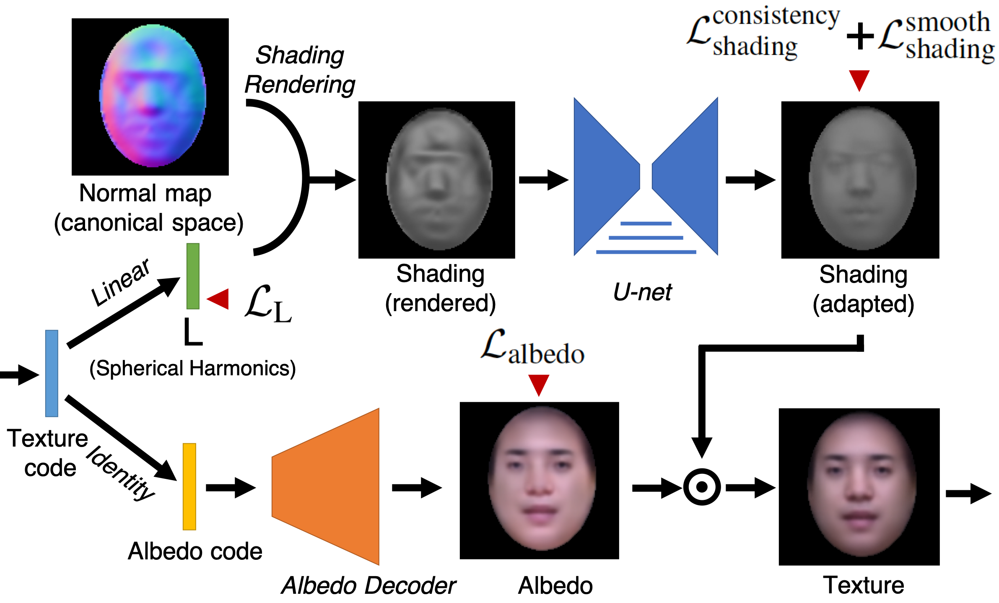

Lifting Autoencoders
Unsupervised Learning of a Fully-Disentangled 3D Morphable Model
using Deep Non-Rigid Structure from Motion
arXiv preprint
-
Mihir Sahasrabudhe†
CentraleSupélec
Université Paris-Saclay -
Zhixin Shu†
Stony Brook University
-
Edward Bartrum
The Alan Turing Institute
University College London -
Rıza Alp Güler
Ariel AI
Imperial College -
Dimitris Samaras
Stony Brook University
-
Iasonas Kokkinos
Ariel AI
University College London
- † signifies equal contribution
Abstract
In this work we introduce Lifting Autoencoders, a generative 3D surface-based model of object categories. We bring together ideas from non-rigid structure from motion, image formation, and morphable models to learn a controllable, geometric model of 3D categories in an entirely unsupervised manner from an unstructured set of images. We exploit the 3D geometric nature of our model and use normal information to disentangle appearance into illumination, shading and albedo. We further use weak supervision to disentangle the non-rigid shape variability of human faces into identity and expression. We combine the 3D representation with a differentiable renderer to generate RGB images and append an adversarially trained refinement network to obtain sharp, photorealistic image reconstruction results. The learned generative model can be controlled in terms of interpretable geometry and appearance factors, allowing us to perform photorealistic image manipulation of identity, expression, 3D pose, and illumination properties.
Shape from Unconstrained Images

Network Architectures
Shape learning using reprojection loss


Training on CelebA &
small>fully unsupervised
Interpolation over texture, pose, and shape


Training on MultiPIE
weak supervision for identity, pose, and expression
Shape learning using reprojection loss